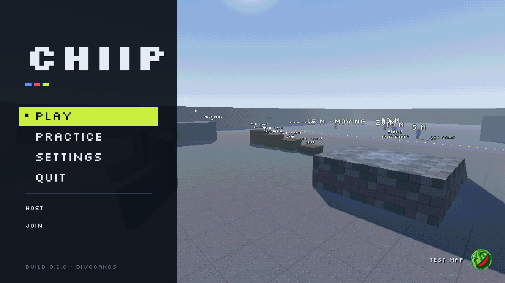

Chiip
A tactical shooter in the spirit of Counter-Strike, with the look of a 1990s Quake-era game. You and your bot teammates against a team of bots, or with friends online in place of the bots. Free, for Windows, macOS and Linux.
Free download from GitHub Releases

What it is
Two modes
Bomb: CS-style rounds. Buy in the freeze time, plant or defuse, first to 5 rounds with a side swap. Team Deathmatch: respawning, first team to the kill limit.
Three maps and a range
Depot, Square and Spillway, small and fast, alone or in a rotation. The Shooting Range has targets at every distance and a stand for every gun.
Four classes
Two are offered at random each match. Rifleman, Bulwark, Marksman and Scout each bring a perk and a loadout.
A full arsenal
Rifle, carbine, SMG, shotgun, sniper, pistol, hand cannon, knife and three grenades, with armor, kits and a light economy.
CS-style feel
Counter-strafing, a spray pattern you can learn, headshots, a bunny-hop cap, and sensitivity in CS units. Bots on three difficulties.
Online with friends
One player hosts, friends join by address, bots fill the empty slots. Made for Tailscale: nothing to open on your router.
Screens


Get Chiip
Free for Windows, macOS and Linux. No account, no install, no ads: unzip and play.